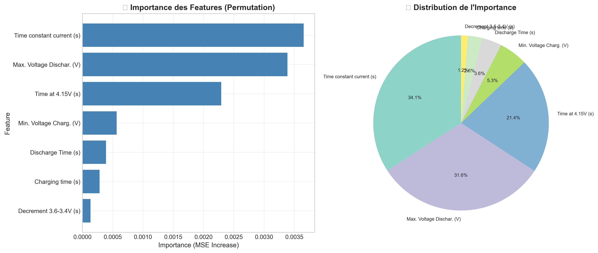

🔋 Prédiction du Remaining Useful Life (RUL)
Batteries Lithium-ion 18650 | Mini-projet Maintenance Intelligente
📌 Introduction – Pourquoi prédire le RUL ?
Les batteries lithium-ion (NMC-LCO 18650 – 2.8 Ah) sont essentielles dans les véhicules électriques, le stockage d'énergie renouvelable et les systèmes critiques. Prédire leur durée de vie restante (RUL) permet d'anticiper les pannes, d'optimiser la maintenance prédictive et de prolonger leur usage en seconde vie.
📂 Dataset : Hawaii Natural Energy Institute – 14 cellules – plus de 1000 cycles à 25°C – Charge C/2 – Décharge 1.5C.
📥 Télécharger le Dataset📊 1. Analyse FMDS (Fiabilité, Maintenabilité, Disponibilité, Sécurité)
🎯 Résultats Clés FMDS
- MTBF : 3915.39 heures (~163 jours)
- MTTR : 2.0 heures (hypothèse)
- Disponibilité : 99.95%
- Meilleur modèle : Weibull (β=32.53, η=3986.47h)
📋 Indicateurs FMDS Détaillés
| 📊 Indicateur | 📈 Valeur | 💡 Interprétation | 📊 Performance |
|---|---|---|---|
| MTBF (Mean Time Between Failures) | 3915.39 h | Durée de vie moyenne entre pannes | Excellent |
| MTTR (Mean Time To Repair) | 2.0 h | Temps moyen de réparation (hypothèse) | Rapide |
| Taux de défaillance (λ) | 0.000255/h | Risque de panne par heure | Très faible |
| Disponibilité | 99.95% | Système très disponible | Exceptionnel |
| Modèle de défaillance | Weibull β=32.53 | Usure progressive très marquée | Validé |
| Paramètre d'échelle (η) | 3986.47 h | Cycle caractéristique (63.2% défaillance) | Stable |

Figure 1: Analyse FMDS complète - Distribution des temps de vie, fonctions de fiabilité, hazard rate, Kaplan-Meier, QQ-Plot Weibull et variabilité inter-batteries
🔍 2. Diagnostic - Classification des États de Santé
🎯 Objectif du Diagnostic
Détecter en temps réel l'état de santé des batteries pour anticiper les défaillances et planifier la maintenance.
📊 Méthodologie de Classification
| 🏷️ Classe | 📈 Critère (RUL) | 💡 Signification | ⚡ Action |
|---|---|---|---|
| ✅Excellent | > 75% du RUL max | Batterie neuve/peu utilisée | Utilisation normale |
| 👍Bon | 50-75% du RUL max | Bon état général | Surveillance standard |
| ⚠️Moyen | 25-50% du RUL max | Dégradation visible | Surveillance renforcée |
| 🚨Critique | ≤ 25% du RUL max | Risque de panne élevé | Remplacement imminent |

Figure 2: Distribution équilibrée des 4 classes (Excellent: 3838, Bon: 3564, Moyen: 3772, Critique: 3717 échantillons)
🤖 Performance Comparative des Modèles
| 🧠 Modèle | 📊 Accuracy | 🎯 Précision | 🔄 Rappel | ⚖️ F1-Score | 📈 AUC-ROC | 🏆 Rang |
|---|---|---|---|---|---|---|
| 🌲Random Forest | 89.3% | 0.892 | 0.893 | 0.892 | 0.988Top | 1er |
| 🌳Decision Tree | 83.9% | 0.838 | 0.839 | 0.838 | 0.947 | 3ème |
| ⚡SVM (RBF) | 83.7% | 0.780 | 0.850 | 0.810 | 0.979 | 2ème |
📊 Analyse Détaillée - Random Forest (Meilleur Modèle)
✅ Points Forts
⚠️ Confusions Observées
- Bon ↔ Moyen: ~135-153 cas
- Critique ↔ Moyen: ~159 cas
- Excellent ↔ Bon: ~14 cas
Confusions normales entre classes adjacentes (dégradation progressive)

Figure 3: Importance des features - Le Discharge Time (26%) domine, suivi de Time at 4.15V (21%) et Time constant current (19%)
🔍 Interprétation des Features Importantes
| 📊 Feature | 📈 Importance | 💡 Pourquoi Important? |
|---|---|---|
| Discharge Time (s) | ~26% | Directement lié à la capacité restante de la batterie |
| Time at 4.15V (s) | ~21% | Indicateur de dégradation (voltage max en charge) |
| Time constant current (s) | ~19% | Phase CC diminue avec le vieillissement |
| Decrement 3.6-3.4V (s) | ~11% | Vitesse de décharge en fin de cycle |

Figure 4: Matrices de confusion comparées - Random Forest montre la meilleure diagonalité (moins d'erreurs)

Figure 5: Courbes ROC multi-classes - Random Forest (AUC=0.99) > SVM (AUC=0.98) > Decision Tree (AUC=0.95)
📈 Analyse des Courbes ROC
🎯 Capacité de Discrimination
- AUC ≥ 0.95 pour tous les modèles → Excellente discrimination
- Random Forest (0.988) → Presque parfait
- Taux de vrais positifs > 90% avec faible taux de faux positifs
- Modèles fiables pour la détection précoce des états critiques
✅ Conclusion du Diagnostic
Le modèle Random Forest est retenu avec 89.3% d'accuracy et un AUC de 0.988. Ses avantages:
- ✅ Capte les relations non-linéaires entre les paramètres de charge/décharge
- ✅ Robuste au surapprentissage grâce aux 100 arbres
- ✅ Interprétable via l'importance des features
- ✅ Rapide en inférence → adapté au temps réel
- ✅ Excellent pour classes déséquilibrées
🎯 Ce modèle permet une surveillance fiable avec moins de 11% d'erreurs de classification.
🔮 3. Pronostic - Prédiction RUL (Deep Learning)
🎯 Comparaison des Modèles de Prédiction RUL
Évaluation comparative de 5 architectures pour la prédiction du Remaining Useful Life.
📊 Tableau Comparatif des Performances
| 🤖 Modèle | R² | RMSE (h) | MAE (h) | MAPE (%) | RA | α-λ 20% | 📝 Performance |
|---|---|---|---|---|---|---|---|
| 🧠LSTM MEILLEUR | 0.9753 | 0.0138 | 0.0103 | 37.0 | 0.63 | 66.0% | Meilleur suivi dynamique + fin de vie |
| 🌲Random Forest | 0.9761 | 0.0137 | 0.0092 | 37.8 | 0.62 | 68.1% | Très stable – rapide – bon compromis |
| 📊XGBoost | 0.9743 | 0.0142 | 0.0101 | 41.0 | 0.59 | 64.8% | Excellente feature importance |
| 🔄GRU | 0.9607 | 0.0174 | 0.0131 | – | – | – | Moins performant que LSTM |
| 🔍CNN 1D | 0.9469 | 0.0202 | 0.0153 | – | – | – | Moins adapté aux longues séquences |

📊 Importance des Features - Modèle LSTM

Figure 8: Importance des features par permutation pour le modèle LSTM. Time constant current (34.1%), Max. Voltage Dischar. (31.6%) et Time at 4.15V (21.4%) représentent 87.1% de l'importance totale. Ces paramètres temporels et de tension sont les indicateurs les plus critiques pour prédire le RUL des batteries.
🔍 Interprétation des Features Importantes pour le Pronostic
📈 Top 3 Features (87.1%)
Ces 3 features dominent la prédiction du RUL
💡 Signification Physique
- Time constant current: Durée phase courant constant → diminue avec la dégradation de la capacité
- Max. Voltage Dischar.: Tension max en décharge → reflète l'état de santé interne
- Time at 4.15V: Temps à voltage max charge → augmente avec la résistance interne
✅ Cohérence Diagnostic vs Pronostic
Les mêmes features importantes apparaissent dans le diagnostic (classification) et le pronostic (prédiction RUL), confirmant leur pertinence physique :
- ✅ Time constant current et Time at 4.15V sont cruciaux pour les deux tâches
- ✅ Les paramètres temporels dominent les paramètres de tension
- ✅ Validation de la qualité des features sélectionnées
🏆 Résultats Clés - Modèle LSTM
- R² = 0.9753 - Explique 97.53% de la variance du RUL
- RMSE = 0.0138h (~50 secondes)
- MAE = 0.0103h (~37 secondes)
📈 Visualisations des Prédictions LSTM

Figure 6: Visualisations complètes LSTM

Figure 7: Courbes RUL réel vs prédit par batterie
🔄 Prédiction Cycle par Cycle (Exemple Batterie 4)
🔍 Suivi de la Dégradation Temporelle
Le modèle LSTM suit l'évolution de la dégradation cycle après cycle.
- Cycle 21: RUL Réel = 0.3019h | Prédit = 0.3055h
- Cycle 50: RUL Réel = 0.2936h | Prédit = 0.2950h
- Cycle 100: RUL Réel = 0.2794h | Prédit = 0.2805h
- Cycle 114: RUL Réel = 0.2761h | Prédit = 0.2727h
⏱️ RUL Restant Prédit au Dernier Cycle - Analyse Détaillée
| 🔋 Batterie | 📊 Cycles | RUL Réel (h) | RUL Prédit (h) | Erreur (h) | Erreur (min) | R² | RMSE (h) | MAE (h) | 🏆 Performance |
|---|---|---|---|---|---|---|---|---|---|
| Batterie 4 | 1061 | 0.000278 | 0.018974 | +0.018696 | 1.12 | 0.9906 | 0.008515 | 0.007400 | Très bon |
| Batterie 7 TOP | 1061 | 0.000278 | 0.000786 | +0.000509 | 0.03 | 0.9833 | 0.011328 | 0.007933 | Exceptionnel |
| Batterie 11 | 1057 | 0.000278 | 0.028055 | +0.027777 | 1.67 | 0.9693 | 0.015387 | 0.012613 | Acceptable |
📋 4. Synthèse et Recommandations
✅ Points Forts
- Pronostic (LSTM): R² = 97.53%, erreur < 1 minute
- Diagnostic : Random Forest ~89% accuracy, AUC 0.99
- FMDS : Disponibilité 99.95% et MTBF ~3915 heures
- Features : Temps de décharge dominent
- ROC : AUC ≥ 0.95 pour tous les modèles
⚠️ Limites Actuelles
- Dataset limité à 14 batteries en conditions de laboratoire
- Absence de variabilité réelle (température, C-rates...)
- MTTR estimé à 2 heures (hypothèse)
- Pas de capteurs additionnels
🎯 Recommandations
- Utiliser le LSTM pour la prédiction RUL en temps réel
- Déployer le Random Forest pour le diagnostic des états de santé
- Planifier la maintenance préventive vers ~3100 heures
- Implémenter un système d'alerte hiérarchique
- Surveiller particulièrement après 4000 heures
🏆 Conclusion Générale
Ce mini-projet en Maintenance Intelligente a exploré une approche hybride combinant FMDS, diagnostic par Random Forest et pronostic par LSTM. Les résultats sont encourageants avec un R² de 97.53% pour le LSTM et un AUC de 0.99 pour le Random Forest.
Avec seulement 14 batteries en conditions de laboratoire, ces performances doivent être validées sur un dataset plus large et en environnement réel.